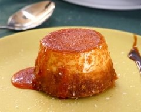

Flan de Coco!

Description:
Flan de Coco is my favorite latin american dessert. It reminds me of the time I spend with my uncle and my grandma.
Both of them are the type of chefs that can't share a kitchen. They
hold the ultimate recipes that never must be shared and are hardly impressed.
That's why Flan de Coco is so special, it's a dessert that broke the
pride barrier and made us share a beautiful moment.
Now I must warn you, this recipe is a little bit different from the ones
you will find in here. You see, in order to do it you need a pressure cooker. So if
you don't have one, you better get one. I mean it, this Flan de Coco will change your perspective of life.
It's that good.
Ingredients:
- 200 ml of coconut milk
- 250 ml of condensed milk
- 3 eggs
- 50 g of grated coconut
- liquid caramel
Steps:
- Put the coconut milk, the condensed milk and the eggs in a blender and mix together.
- In a flan mold that fits inside the pressure cooker, pour the amount of liquid caramel of your preference.
- Pour the mix we have in the blender into the flan mold that has the caramel, do not stir.
- Put the flan mold inside the pressure cooker.
- Fill the pressure cooker with enough water so it doesn't surpass the height of the flan mold.
- Cook on a high heat until the corch goes up, then let it stay in the lowest heat possible for at least 20 minutes.
- Check if it's done with a knife or a toothpick, if not let it stay in the heat for another 5 minutes.
- When it's properly cooked, let it sit outside until warm and then refrigerate for at least 4 hours.
- You can add grated coconut on top once it's finished.